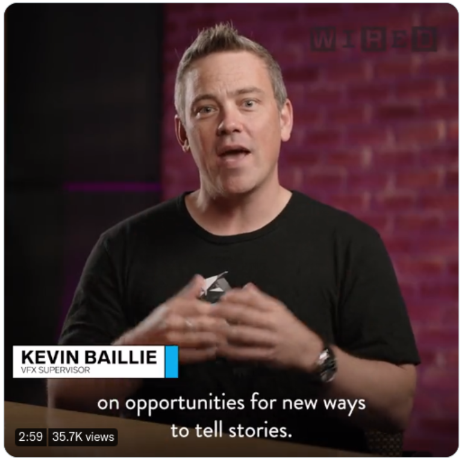

Home
Explore
Notifications
Message
Bookmarks
Lists
Profile
More
Tweet
Home
What's happening?
Wired @WIRED 22h
Machine learning is helping create previously unimaginable moments in media today. Let's examine hoe A.I. is changing Hollywood's creative workflow:

Microsoft in Business @MSFT_Business
Learn how hybrid work, thnking ahead, and agile support can make your company stand out. Read our latest blog by Patrick Connally, National Industry Director of U.S. Proffesional.